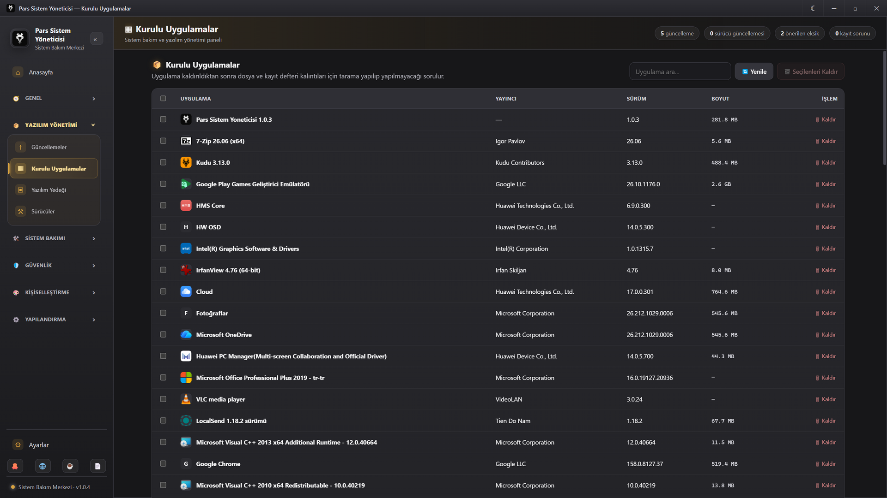

Güncellemeler
winget ile güncellemesi olan paketleri tarar, seçili veya tüm güncellemeleri tek seferde uygular.
winget ile güncelleme ve kaldırma, disk temizleme, kayıt defteri onarımı, güvenlik duvarı denetimi ve sürücü yönetimi. Her yıkıcı işlem onaylı, her kritik değişiklik yedekli.
Yönetici olarak çalışırÜcretsizİnternet bağlantısı winget işlemleri için gerekir
Sistem bakım ve yazılım yönetimi paneli
Uygulamadan
Gerçek arayüzden alınmış ekran görüntüleri otomatik olarak sırayla gösterilir. Üzerine gelerek durdurabilirsiniz.




Özellikler
Günlük bakımdan kurumsal ilke kaynaklı sorunlara kadar yaygın Windows baş ağrılarını tek bir arayüzde toplar.
winget ile güncellemesi olan paketleri tarar, seçili veya tüm güncellemeleri tek seferde uygular.
Uygulamaları kaldırır, geride kalan dosya ve kayıt girdilerini tarar. Varsayılan olarak Geri Dönüşüm Kutusu kullanılır.
Geçici dosyalar, önbellekler, Windows Update indirmeleri ve DNS dahil yedi kategoride güvenli temizlik.
Bozuk kaldırma girdilerini 64 ve 32-bit üzerinde tarar. Silmeden önce her girdi .reg olarak yedeklenir.
Etkin gelen kuralları denetler; geniş kapsam, eksik program yolu ve imzasız ikilileri kritik olarak işaretler.
Sekiz yerel, salt-okunur motor: imzalar, sezgisel analiz, betikler, sistem bütünlüğü, kalıcılık, Defender, HOSTS ve tarayıcı denetimi.
Windows Update Agent ile sürücü güncellemelerini tarar; kurulum öncesi DISM ile yedek alma seçeneği sunar.
Haftalık, günlük, aylık ve özel olmak üzere dört devre dışı plan. Uygulama açıkken 60 saniyelik döngüyle çalışır.
Ağ, performans, arayüz, gizlilik ve servislerde tersine çevrilebilir ayarlar. Her değişiklikten önce zorunlu .reg ve JSON yedeği alınır; hiçbiri otomatik uygulanmaz.
Rekabetçi Oyuncu, Düşük Gecikme Ağ, Dengeli Optimizasyon ve Güvenli Gizlilik; açık onayla uygulanır ve geri alınır.
Beş herkese açık DNS sağlayıcısının gecikmesini ölçer, en hızlısını tek tıkla uygular. DHCP sıfırlama ve arabirim yedeği zorunludur.
NIC sürücü ayarları, Prefetch temizliği, WMI/sayaç rebuild, Installer 2502/2503 yetkileri, NTP senkronizasyonu ve Güvenli Mod kontrolü.
Windows 10 klasik menüsü ile Windows 11 modern menüsü arasında geçiş yapar ve Gezgin’i otomatik yeniden başlatır.
“Kuruluşunuz tarafından yönetiliyor” uyarısını düzelten Windows ve tarayıcı .reg dosyalarını içerir; uygulama öncesi yedek alınır.
Yeni sürümü kontrol eder, SHA-512 ile doğrular ve onayınızla indirip kurar. Portable sürümde dosyayı değiştirmez.
Grafit/altın veya Windows 11 açık teması, Türkçe/İngilizce ve 55 dil, hariç tutma listeleri ve gruplu animasyonlu menü.
Güvenlik yaklaşımı
Hız için güvenlikten ödün verilmez: korumalı kökler hiçbir temizleme işlemine dahil edilmez, sembolik bağlantılar atlanır.
Uygulama yönetici izinleriyle çalışır; ancak aşağıdaki kurallar her işlemde geçerlidir.
Kurulumu veya tek dosyalık portable sürümü indirin; birkaç saniyede kullanmaya başlayın.
Sık sorulan sorular
Güvenlik duvarı kuralları, HKLM kayıt girdileri, sürücü işlemleri ve sistem çapındaki temizlik işlemleri yükseltilmiş izin gerektirir. UAC penceresi beklenen bir davranıştır.
Gerektirmez. exe’yi çalıştırdığınızda geçici bir klasöre çıkarılır ve kapatınca temizlenir. Ayarlarınız ve yedekleriniz kullanıcı klasörünüzde saklandığı için kalıcıdır.
Ayarlar ve ek çeviriler %APPDATA%\pars-sistem-yoneticisi-ts altında; kayıt, güvenlik duvarı ve sürücü yedekleri %LOCALAPPDATA%\ParsSistemYoneticisi altında tutulur. Hiçbir veri uzak sunucuya gönderilmez.
Arayüz ve yerel bakım araçları çevrimdışı çalışır. winget kataloğu, sürücü taraması ve uygulama güncelleyici internet bağlantısı gerektirir.
Kurulum exe’si winget’i algılar ve eksikse Microsoft’un resmi kaynağından sessizce kurar. Başarısız olursa uygulama yine kurulur; Ayarlar → Gerekli bileşenler alanından yeniden deneyebilirsiniz.
Hayır. Sekiz motor yalnızca yerel ve salt-okunur denetim yapar; gerçek zamanlı koruma, karantina veya dosya silme işlemi yoktur. Mevcut güvenlik yazılımınızı kullanmaya devam edin.
Ayarlar → Kapatma davranışı alanından “Uygulamayı kapat”ı seçin; “Windows ile başlat” anahtarını kapatarak otomatik açılışı tamamen devre dışı bırakabilirsiniz.